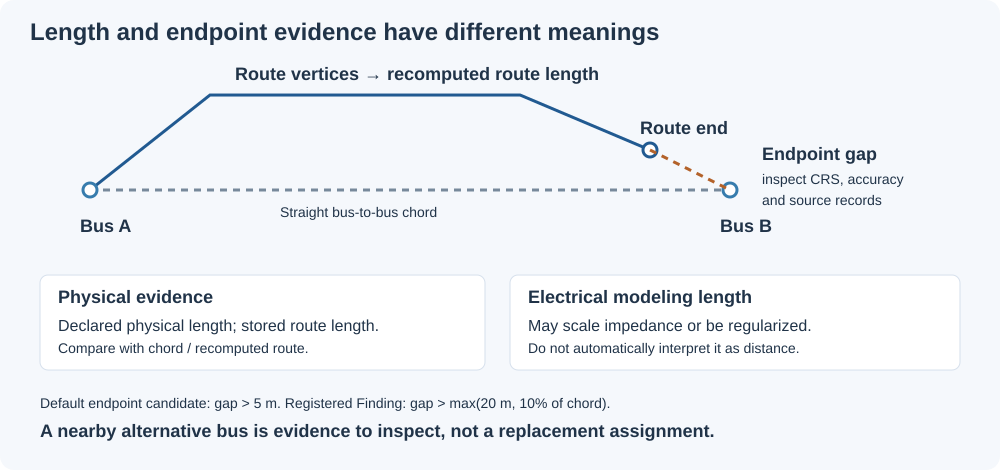
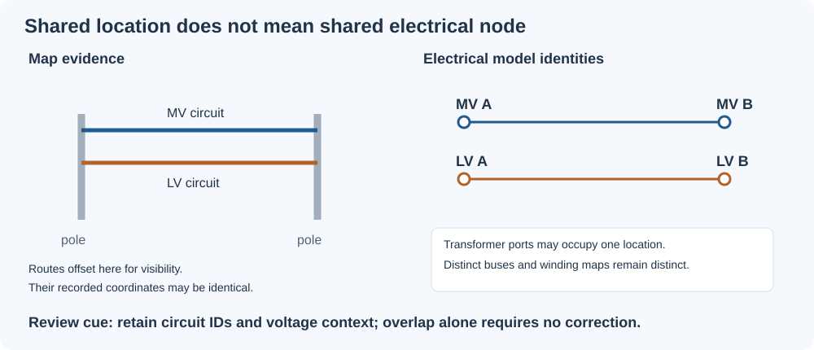
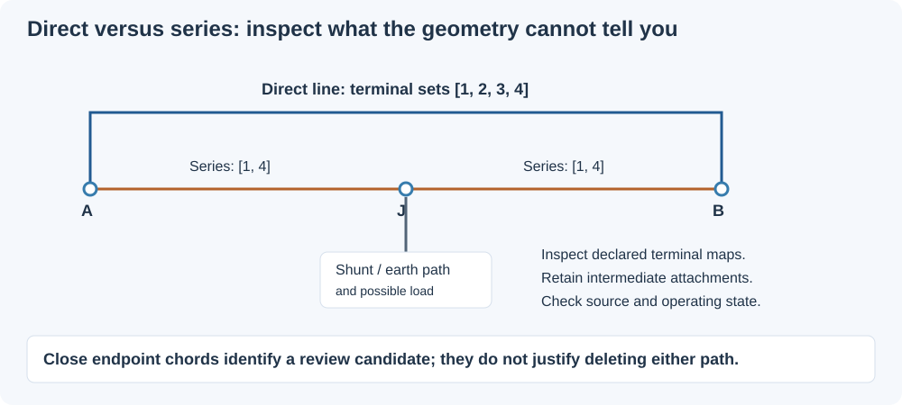
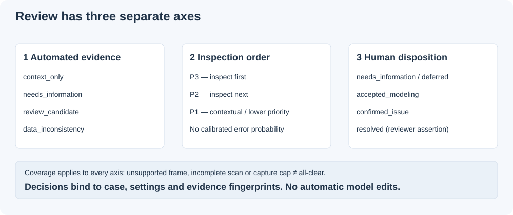

Spatial diagnostics and cleanup review
Bus coordinates and route geometry describe a network a second time, independently of its electrical declarations. Where the two descriptions disagree — a line shorter than the distance between its buses, a route that ends away from its bus, two lines drawn on the same segment — something deserves a look. Spatial analysis finds those disagreements and tells you what to inspect and which source records to consult. It cannot tell you which declaration is wrong; that is a decision for a reviewer with access to the sources.
It does not merge buses, snap or transform coordinates, rewire circuits, delete parallel branches, edit the model, suppress Findings or certify a repair. Reviewer decisions are records kept outside the model, and a resolved disposition is the reviewer's assertion. A small or empty review queue is not an all-clear: check coordinate coverage and scan limits first.
To work through a case, follow the spatial cleanup tutorial. Every setting, threshold and result key is listed in Spatial analysis settings and result keys.
What the evidence can and cannot establish
Coordinates are useful because some relations between position and length are nearly physical laws. A conductor cannot be shorter than the straight line between its ends, and it is rarely several times longer. A ratio between length and distance that sits on a unit factor across a whole network is a unit slip, not a set of individual errors. A bus at longitude 0, latitude 0 has lost its position. These contradictions are strong enough to raise registered W.GEO.* Findings, but only once the coordinate frame is declared.
Other observations are weaker and enter a review queue instead: buses close together without a direct branch, a direct line alongside a series path between the same buses, lines sharing an exact route segment or a source identifier, unusually long spans. Each has legitimate explanations, so the queue records the observation, its alternatives and what to check, without a verdict.
What geometry cannot settle:
- Which side is wrong. A length/chord contradiction implicates the length, the two bus positions, or the bus references. The evidence names the pair.
- Electrical equivalence. Matching endpoints or shared routes say nothing about conductor maps, attachments or operating state.
- Physical infrastructure. Coordinates and voltage labels do not verify shared poles, independent circuits or conductor continuity.
Spatial analysis runs by default within the connectivity pass whenever a bus has longitude, latitude, x or y. Coordinate fields trigger it; a supported frame declaration and valid coordinates decide which comparisons apply. Unsupported evidence and disabled checks are reported as such, never as passes.
Coordinate frames
A field named longitude may hold feet from a drawing. Guessing the frame would produce confident nonsense, so metric comparisons — chords, route endpoints, transformer extents, proximity — run only in a declared frame:
- a geographic frame (WGS84 or an accepted national datum), where distances are great-circle lengths;
- a local Cartesian frame with declared length units, where distances are Euclidean;
- route evidence: with no declaration, a valid WGS84 route whose ends match its bus coordinates supports the frame for those two buses only.
Any other declaration is recorded and leaves metric checks inapplicable; conflicting declarations are ambiguous and suppress them. Without any declaration, distances are indeterminate while length statistics and exact coincidence remain available.
Which declaration do I write?
| Your coordinates | Declare | Result |
|---|---|---|
| Longitude/latitude in WGS84 | "crs": "EPSG:4326" | great-circle distances |
| Longitude/latitude in a national datum: GDA94/GDA2020 (Australia), JGD2000/JGD2011 (Japan), NAD83 (North America), ETRS89 (Europe), NZGD2000 | its EPSG code or name, e.g. "crs": "EPSG:7844" | great-circle distances; datum records the frame |
| Easting/northing on a projected grid (MGA, Japan plane rectangular, State Plane, British National Grid, UTM) | either the EPSG code, which is recorded but not interpreted (declared_other, metric checks inapplicable), or a local Cartesian frame with the grid's length unit if you accept the plane as locally Euclidean | Cartesian: Euclidean distances |
OpenDSS Buscoords in feet or meters | sideload_coordinates!(net, csv; frame=:cartesian, units="ft") | Euclidean distances |
| A schematic drawing | nothing, or coordinate_provenance = "schematic" | no metric checks |
A local Cartesian frame is declared as an object:
{"meta": {"coordinate_reference_system": {
"type": "cartesian", "name": "site_grid", "units": "m",
"axis_order": ["x", "y"]
}}}The national datums are accepted because the checks compare great-circle lengths against tolerances of max(5 m, 10 %): the difference between those datum realizations is at most a couple of meters and common to both ends of a line. Coordinates are used as declared; nothing is transformed between datums, and a case that mixes declarations is reported as a conflict. Treating a projected grid as a local plane ignores its scale factor, at most about 0.1 % inside a zone of the grids listed above and far below the tolerances; you make that choice by declaring the Cartesian frame, the package does not make it for you. Route checks remain geographic-only.
By default sideload_coordinates! copies OpenDSS x,y into longitude,latitude without transforming or verifying them, so plausible numbers do not establish a geographic frame. Use frame=:cartesian with the source unit when the values are a plane.
Bus-level declarations must agree with the network frame; they cannot define a transformation, and conflicting buses are excluded from metric and exact-group comparisons. Named longitude/latitude fields always mean those axes: a conflicting axis-order declaration is reported, never used to swap values. coordinate_provenance and coordinate_accuracy_m describe reported data quality. schematic and displaced positions are excluded from metric checks; other labels are kept without upgrading them to surveyed evidence, and accuracy never widens a threshold.
PowerIO GeoLayer geometry
PowerIO-written BMOPF keeps geometry in extras.geojson, a GeoJSON FeatureCollection whose powerio_geo member declares the coordinate space. Spatial analysis reads only bus position fields, line.meta.route_geometry and the network frame declaration, so it does not read that layer implicitly; a coordinate-free case carrying one reports unapplied_geolayer. Apply it explicitly:
net = parse_bmopf("powerio_case.bmopf.json")
layer = sideload_geolayer!(net) # counts of applied, unmatched and invalid features
report = analyze(net)sideload_geolayer! applies only a geographic WGS84 layer: bus Point features become longitude/latitude, line LineString features become WGS84_geodesic_polyline route geometry with a recomputed great-circle length_m, and meta.crs is declared when the network has none. Projected, diagram and unknown spaces, other CRSs and conflicting network declarations are reported and left unapplied. Existing positions and routes are kept unless overwrite=true.
Reading the kinds of evidence
Keep the different lengths separate

A line can carry several lengths with different meanings: the physical length (meta.physical_length_m), the declared electrical length that scales impedance, a stored route length and a route length recomputed from vertices. A regularized electrical length (meta.electrical_length_regularized = true) is not evidence of physical distance, so without a physical length the chord check is indeterminate. The physical length, when declared, is the basis for the chord comparison.
Route length_m and the declared length often come from the same upstream calculation, so their agreement is an internal-consistency check, not independent confirmation. A declared/physical disagreement exposes, for example, a parent line's physical_length_m inherited by each of its split sections, without deciding which value should change.
An endpoint gap between a route and its bus can come from bus placement, stale route geometry or a wrong bus reference. Check the frame, reported accuracy and source provenance before deciding which declaration to change. A nearby alternative bus is listed as a lead, never selected as a replacement.
Shared locations can be intentional

MV and LV circuits often share poles, and same-voltage parallel circuits may share a route. A transformer has several ports at one location; an open switch can separate buses with identical coordinates. None of these requires a spatial repair. The queue therefore classifies overlap between lines of different known voltage systems as context, using source-propagated voltage labels (never coordinates) evaluated over every member of a group. Independent endpoint or length contradictions on the same lines are still reported on their own.
Exact coincidence is raw equality within one coordinate field family, with no snapping. Groups are tagged by direct branch context (transformer ports, line, open/closed/unknown switch, or no direct branch); coincidence alone emits no Finding.
A nearby series path is not a redundant circuit

The direct/series check compares bus chords and declared incidence: a direct line whose endpoints are also joined by a line-only path of similar chord length. That may be a duplicate representation or a legitimate parallel path. A grounding shunt or load at the interior bus J makes removal consequential even when the endpoint geometry is identical. Each such item therefore carries interpretation_evidence: oriented terminal maps, attachments at interior buses, each line's lengths and any source declarations (origin, claim, placeholder, …) with their metadata paths. Equal terminal sets at a bus do not compose conductor paths, and producer claims such as "placeholder" remain claims.
Proximity and topology
Proximity groups buses within a radius (default 1 m, a review setting rather than a survey tolerance). Clusters use single linkage, so A near B and B near C may form one cluster with A far from C; a cluster is not a common electrical node.
The bus graph used for topology candidates is descriptive: lines and all ports of supported transformers join bus components regardless of galvanic isolation, closed switches join the certain graph, and switches of unknown state join only the possible graph. Nearby pairs are then labeled as in the same component, in separate components, or uncertain. This is not conductor reachability or energization.
Category, priority and disposition are separate

Every queue item is described on three independent axes:
- Category — what the automated evidence supports:
context_only,needs_information,review_candidateordata_inconsistency. Adata_inconsistencyidentifies conflicting declarations without saying which is wrong. No automated category means "confirmed issue". - Priority — the order of inspection, P3 first to P1 last, with directly attached loads and component counts as tie-breakers. Priority is ordinal: it is not an error probability, electrical severity or downstream impact.
- Disposition — the reviewer's decision:
confirmed_issue,needs_information,deferred,accepted_modelingorresolved. Only a reviewer sets it.
Decisions never change categories or counts. They move items between the attention, context and reviewed views of the report: unreviewed context sits apart from attention items, and accepted or resolved items move to a reviewed inventory rather than disappearing. Category counts count observations, not unique defects. The mapping from evidence to category and priority is tabulated in the reference.
W.GEO.* codes are registered Findings in the GEO reference. The S.* candidate codes and R.LINE_LENGTH_CONTEXT label review items; they are not Finding codes.
Completeness and budgets
Every search has a budget, and the queue has a capture cap. Results distinguish observed from captured candidates and report scan and capture completeness per check. When a budget runs out, totals become null and observed counts are lower bounds. The queue is ranked within the captured subset only, so a cap can hide a higher-priority candidate; queue_complete = false means some scan, capture or the final queue is incomplete. Completeness also refers only to the declared domain: buses without usable geometry are outside it, and the coverage fields say how many. Raise the budget and re-analyze before treating a queue as exhaustive.
Decisions are bound to the evidence
A decision is an assertion about specific evidence, so each record carries three fingerprints: of the whole case, of the analysis policy and [spatial] configuration, and of the item's evidence. Any change to the case — even one unrelated to the item — or to any spatial setting turns earlier decisions into stale_decision. The package will not assume evidence is unchanged.
In practice, review a batch, apply the corrections together, re-analyze, then re-record the decisions that still apply. Stale records stay in the audit trail. A record whose item no longer exists is reported as unmatched; that is the expected outcome after a correction, but absence can also come from a capture limit or a changed identity, so unmatched never means resolved. Keep the ledger in its own file and replay it whole on each new analysis: a replay never inherits dispositions from an earlier one. The ledger schema is in the reference; the workflow is in the tutorial.
Reading the report
render(report, "report.md") includes the spatial section. It opens with a coordinate-coverage banner — eligible and excluded buses, the resolved frame, reported-accuracy coverage — because the queue cannot be read without it. A candidate index links to the attention items below; context and reviewed items have their own inventories. Each list shows up to 20 entries with shown/total counts; render_spatial_review and export_spatial_review take item_limit to change this, without changing the captured queue. Full asset IDs are in each entry and in the JSON; row numbers are navigation aids that change on regeneration. A location group is an inspection anchor, not proof that every subject sits at that point.